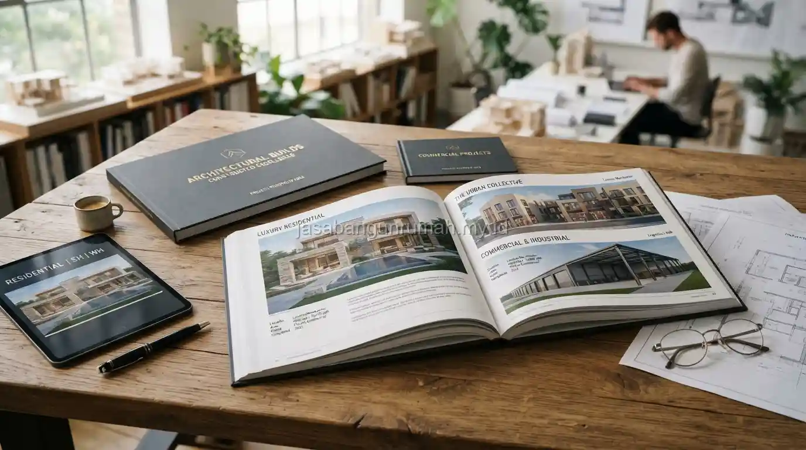

Daftar Isi
Memilih kontraktor bangun rumah terpercaya dapat dilakukan dengan memverifikasi legalitas perusahaan, memeriksa portofolio proyek sebelumnya, memastikan sistem pembayaran bertahap yang wajar, serta memastikan seluruh kesepakatan tertuang jelas dalam kontrak tertulis.
Apa Saja Ciri Kontraktor Bangun Rumah yang Dapat Dipercaya?
Kontraktor terpercaya umumnya memiliki legalitas usaha yang jelas seperti Nomor Induk Berusaha, portofolio proyek nyata yang dapat dikunjungi langsung, serta bersedia menjelaskan rincian pekerjaan secara transparan sebelum kontrak disepakati.
Selain legalitas, kontraktor yang kredibel biasanya juga memiliki tim tetap atau jaringan tukang yang sudah berpengalaman bekerja sama dalam waktu lama, bukan sekadar mengumpulkan tukang lepas secara dadakan untuk satu proyek saja.
Kesediaan kontraktor untuk memberikan referensi klien sebelumnya yang dapat dihubungi langsung juga menjadi indikator positif mengenai rekam jejak dan kualitas kerja mereka. Beberapa ciri utama yang bisa Anda perhatikan:
- Memiliki kantor fisik dan legalitas perusahaan yang sah
- Memberikan Rencana Anggaran Biaya (RAB) yang detail dan transparan
- Memiliki portofolio proyek yang bisa diverifikasi
- Komunikatif dan responsif terhadap pertanyaan klien
Bagaimana Cara Menghindari Modus Kontraktor yang Kabur di Tengah Proyek?
Salah satu cara menghindari modus kontraktor yang kabur adalah dengan menerapkan sistem pembayaran bertahap sesuai progres pekerjaan yang telah diselesaikan, bukan membayar di muka dalam jumlah besar sebelum pekerjaan benar-benar berjalan.

Pembayaran bertahap yang wajar biasanya disesuaikan dengan pencapaian tahapan pekerjaan, misalnya pembayaran awal untuk memulai pekerjaan persiapan dan pondasi, kemudian pembayaran berikutnya setelah struktur selesai, dan seterusnya hingga tahap finishing.
Pemilik rumah sebaiknya waspada apabila kontraktor meminta pembayaran dalam porsi sangat besar di awal tanpa progres pekerjaan yang jelas, karena pola ini sering menjadi indikasi risiko penipuan.
Apa yang Perlu Diperiksa Sebelum Menandatangani Kontrak Kerja?
Sebelum menandatangani kontrak, pemilik rumah sebaiknya memeriksa kejelasan rincian item pekerjaan, spesifikasi material yang akan digunakan, jadwal pengerjaan, skema pembayaran bertahap, serta ketentuan garansi dan sanksi apabila terjadi keterlambatan.
Kontrak yang baik juga sebaiknya mencantumkan mekanisme penyelesaian apabila terjadi perselisihan di kemudian hari, sehingga kedua belah pihak memiliki acuan yang jelas apabila timbul masalah selama proses pengerjaan berlangsung.
Membaca kontrak secara menyeluruh sebelum menandatangani, meski terlihat merepotkan, jauh lebih baik dibandingkan menghadapi sengketa tanpa dasar kesepakatan yang jelas di kemudian hari.
Mengapa Penting Melibatkan Pengawas Independen Selama Proyek Berjalan?
Melibatkan pengawas independen yang tidak terikat langsung dengan kontraktor dapat membantu memastikan kualitas pekerjaan tetap sesuai standar, terutama bagi pemilik rumah yang tidak memiliki waktu untuk memantau proyek secara harian di lokasi.
Pengawas independen dapat membantu mendeteksi potensi masalah teknis sejak dini, sekaligus menjadi pihak penengah yang objektif apabila terjadi perbedaan pendapat mengenai kualitas hasil pekerjaan antara pemilik rumah dan kontraktor.
Bagi calon pembangun yang ingin memastikan proyek berjalan aman, dapat langsung menghubungi layanan kontraktor bangun rumah kami yang memiliki legalitas resmi, portofolio terverifikasi, dan sistem kontrak yang transparan.